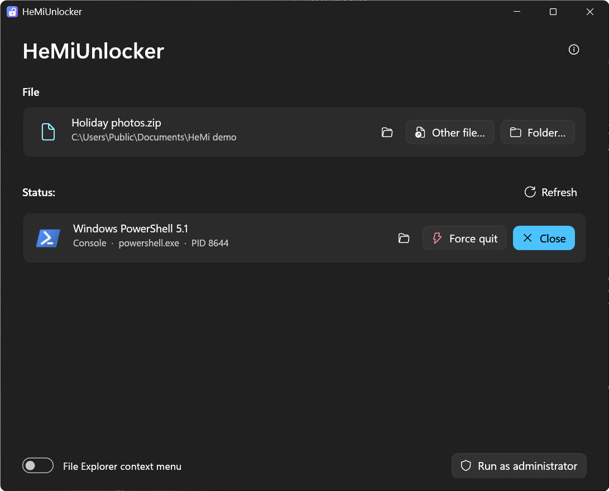

HeMiUnlockerBeta
“The action can't be completed because the file is open in another program.” HeMiUnlocker shows which program it is – and closes it, nicely or by force.
Windows 10 / 11, x64. One small program, nothing else to install. English and Czech.

What it does
Find the holder
Choose a file or folder – a button, drag and drop, or the item in the File Explorer menu – and see every program holding it: name, kind, process, administrator or not.
Close it
Asks the program to close like its × button, so it can still save; when it does not, Force quit ends it after a confirmation.
Safe
System processes cannot be ended, a reused process ID is never hit, and File Explorer is restarted instead of being killed.
Simple
One window, the look of Windows 11, light and dark. The File Explorer item is optional and off by default.
Downloads
| HeMiUnlocker-Setup.exe | The installer: installs for your account, with a Start menu entry and an uninstaller. |
| HeMiUnlocker-Portable.zip | Just the program – run it from any folder. |
| Problems, ideas | GitHub Issues |